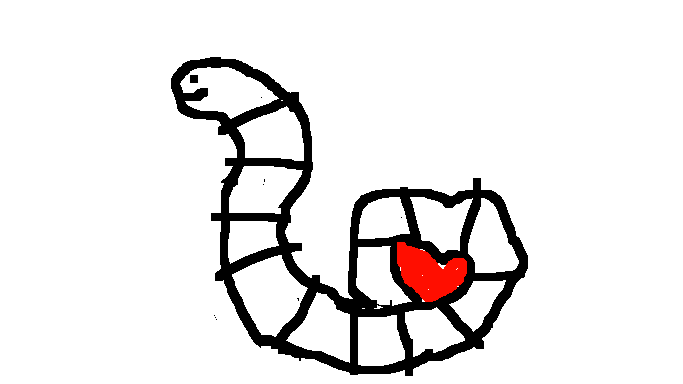

Would You Still Love Me If I Were a Worm?
November 2026 · Palak Sharma
A short and lighthearted exploration of body and identity through a couple's comical conversation about a trending meme; featuring Nagelian analytical philosophy and Kafkaesque absurdism.

The Interrupted Mundaneness of a Regular Wednesday Morning
It is another Wednesday morning. I am drafting another email to another person about some other thing. There is a certain comfort in the mundaneness of the routine, which is inconveniently interrupted when my beloved enters the study room. As usual with impeccable timing, she comes up with the dreaded question of "Would you still love me if I were a worm?"
I suppose this moment springs up in most long term relationships, where a hypothetical within a question is so extreme, that it surpasses any limits of rational reasoning. I being me however, could not give in without a stubborn attempt at a futile undertaking.
Thomas Nagel Tries to Transmute into a Bat and Fails
I sigh, lean back on my chair and look at her in disbelief, and she asks again "Will you?" with eagerly anticipative eyes. I say "Babe, think about Thomas Nagel, hunched over his desk at Princeton, as he imagines stripping off the excess neurons in his neocortex, replacing them with an alien sense of echolocation and using it to find and devour insects. Think about how he tried to imagine growing wings and hanging upside down on the trees at night - only to conclude that we can never really imagine what it is like to be a bat."
"Oh, there he goes again.." my partner says in a familiar resigned and weary tone, but I persist "Just hear me out - we can collect all the physical facts about the bat's echolocation system, study all the structural intricacies of the organ, memorize all the parts of its brain and filter out all the neural networks which enable it, yet we shall never have any access to a bat's conscious point of view, or what echolocation feels like to them.
There's this conclusion drawn by an analytical philosopher, who spent years contemplating on this question before writing up an essay about it, and then there's you, with no attempt at any self-reflection whatsoever, being completely sure about what it is like to be a slimy, barely sentient tube tunneling through dirt all day.
How are you so sure that you shall be able to decipher my love or the lack of it at all, while inhabiting the phenomenologically foreign shell of an invertebrate?"
Categorizing WhatsApp Family Groups as a Modern Kafkaesque Nightmare
"Okay, forget about Philosophy, let's consider the more conclusive realm of literature. Consider what happened to Gregor Samsa, Kafka's protagonist in the "Metamorphosis" after his unfortunate transformation into a monstrous insect.
Say, you bypass the Nagelian epistemic barrier into an alien perspective and turn into a worm, while still retaining your human consciousness, feelings, thoughts and memories. How would you even let the rest of us know about any of them? How would you reassure me that you still love me as a worm, if you do not have the human mouth and speech to let me know?
I could build you a home ecosystem in a glass box with damp soil and fresh leaves, but you shall barely be able to crawl through a few inches of it everyday. What would happen to your whole pipe-dream of backpacking throughout the entire continent of Europe?
You would fit into a single white key of the piano, how would you ever be able to play Debussy's Arabesque No.1 again without rolling, flopping and slamming your entire body across the keys? Forget about even attempting Liszt.
And what do I even say about how your family would react? I can imagine your relatives incessantly texting each other in your family whatsapp group:
"This worm used to be barely present in the room as a human, and now it has stopped speaking completely"
"It was almost impossible for the worm to get a stable job as a human, and now even the almost is gone from the equation, it's just impossible in the purest sense of the word."
"Does this worm still have a bit of human left in them to reproduce any human descendents at all, or will they also be subjected to eternal wormhood as she is now?"
Now you tell me, do you still want to entertain the horrid thought of what it would be like to turn into a worm? How long could I reassuringly put you in my pocket till the absurdity of the whole affair gets to you?"
All Philosophically Sound Arguments Still Lead to the Wrong Answer
"My love, our existence, it is a tireless ping-pong match between biology and consciousness, and there is never a true winner, there is never a final answer."
I looked at my beloved's face, as she rolled her eyes followed with visible slack-jawed exasperation. She goes "Oh for once, all you had to say was yes, that you would still love me if I were a worm…"